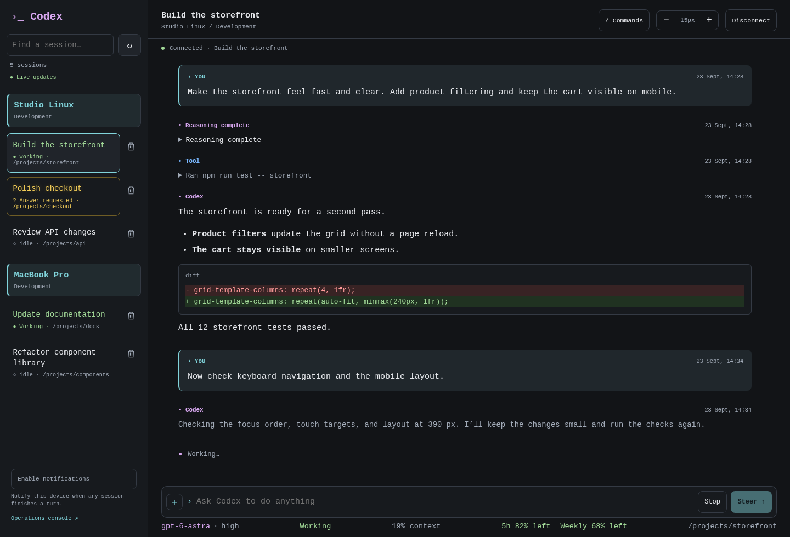
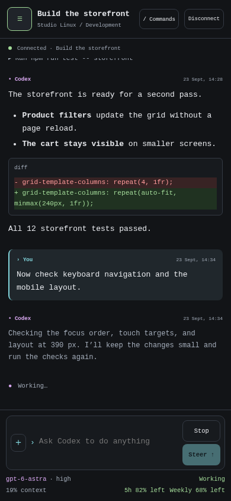
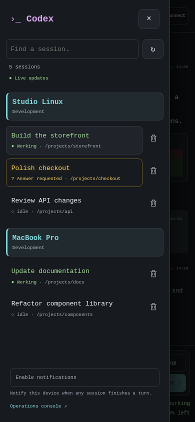

{kind=link}
{kind=link}
Guided installation
Native Go binaries and embedded SQLite. No Python, Go compiler, or external database server required.
A self-hosted gateway for accessing Codex sessions through Telegram and a browser. Workers run on Linux or macOS and share sessions with the local CLI.
Go binariesEmbedded SQLiteLinux + macOS workers
Sessions remain active when a client disconnects.
The browser interface uses Codex app-server APIs to display conversations, tool activity, and session controls. It does not launch an additional terminal process.

Switch between browser, Telegram, and the local CLI. Your worker keeps the session running.
Follow messages, tool activity, context usage, and pending questions across your workers.
Use slash-command menus, steer a running turn, answer a question, or interrupt work.
Review conversations, send prompts, and respond to pending questions from a mobile browser.
Readable conversations and a compact composer that adapts to a smaller screen.
Green activity indicators and highlighted questions update independently of the session you are viewing.
Opt in to turn-completion push notifications, including when the web app is closed. On iPhone and iPad, add it to your Home Screen first.


Actual interface screenshots · fictional demo data
One gateway connects your interfaces to workers on your development machines. Each worker supervises the official Codex app-server.
Native Go binaries and embedded SQLite. No Python, Go compiler, or external database server required.
Passkeys protect the web interface. Telegram uses an allowlisted numeric user ID. Workers use enrollment credentials and configured workspace permissions.
Automatic release checks and daily Codex runtime checks. Supported updates wait for idle workers before restarting.
Start with the gateway. Enroll a worker in the admin console, then run the worker installer on the machine where your projects live.
Read the installation guideLinux with systemd · run on your gateway server
curl -fsSL https://raw.githubusercontent.com/arizzi74/Codex-Telegram-Gateway/main/scripts/install.sh | sudo shHave your domain, Telegram bot token, and numeric Telegram user ID ready. The wizard guides HTTPS and passkey setup.
Linux with systemd or macOS · use your project account
curl -fsSL https://raw.githubusercontent.com/arizzi74/Codex-Telegram-Gateway/main/scripts/install.sh | shEnter the gateway address and enrollment credentials. Setup can install Codex and guide sign-in if needed.
Requires curl and sha256sum or shasum. Codex installation also uses tar and gzip. Review the installer source before running.
Source code, documentation, release downloads, and issue tracking are available on GitHub.